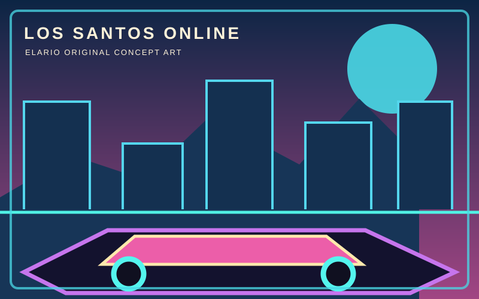

MANY CREWS · ONE VISION
MY CREW.
Every crew has its own story. Build your crew identity, plan sessions and keep your roster together. Your information stays on this device until you choose to export it.
Customize your crew ↓
YOUR CREW CARD
YOUR TAG
Your crew
Many Crews. One Vision.
GTA OnlineCustomize your crew to make this space yours.
Local roster
Session plans
Keep your crew yours
This is a personal guest workspace, not an online Rockstar crew account. No public profiles, shared membership, cloud synchronization or invitations are claimed. Each Online crew and each Story workspace has separate plans. Import adds missing profiles and entries without replacing existing notes. Save a JSON backup before clearing your browser.